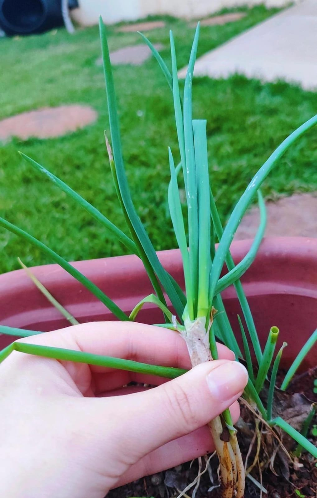

Cebolinha Verde: Cultivo e Cuidados

Por Amanda Bombana Pasa em 07/06/2024.
A cebolinha verde, cientificamente conhecida como Allium schoenoprasum, é nativa possivelmente da Europa. O melhor momento para plantar é entre abril e junho durante a lua crescente, pois pode contribuir para uma colheita mais abundante e de melhor qualidade, de acordo, com a Embrapa (Empresa Brasileira de Pesquisa Agropecuária),.
A colheita pode ser realizada após 70 a 90 dias do plantio. A planta necessita de luminosidade e solo úmido, mas é crucial evitar o encharcamento ao regá-la.
Verificar umidade do solo antes de irrigar é fundamental para evitar problemas de encharcamento. Cuidar para não encharcar a planta durante a irrigação ajuda a garantir seu desenvolvimento saudável.